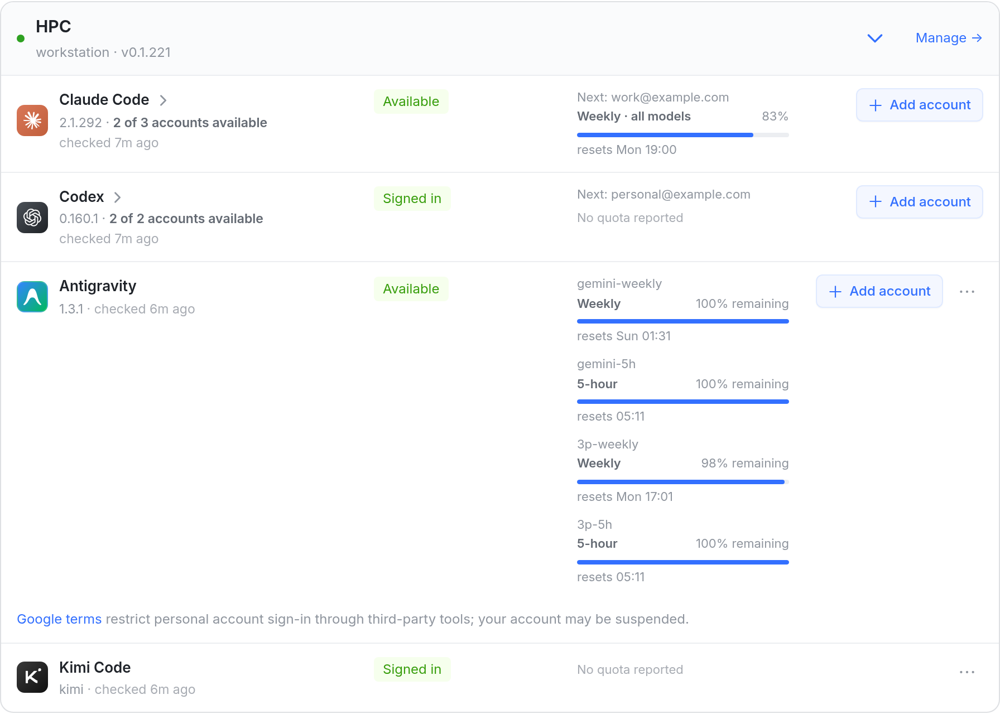
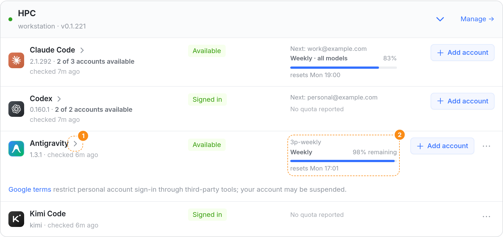
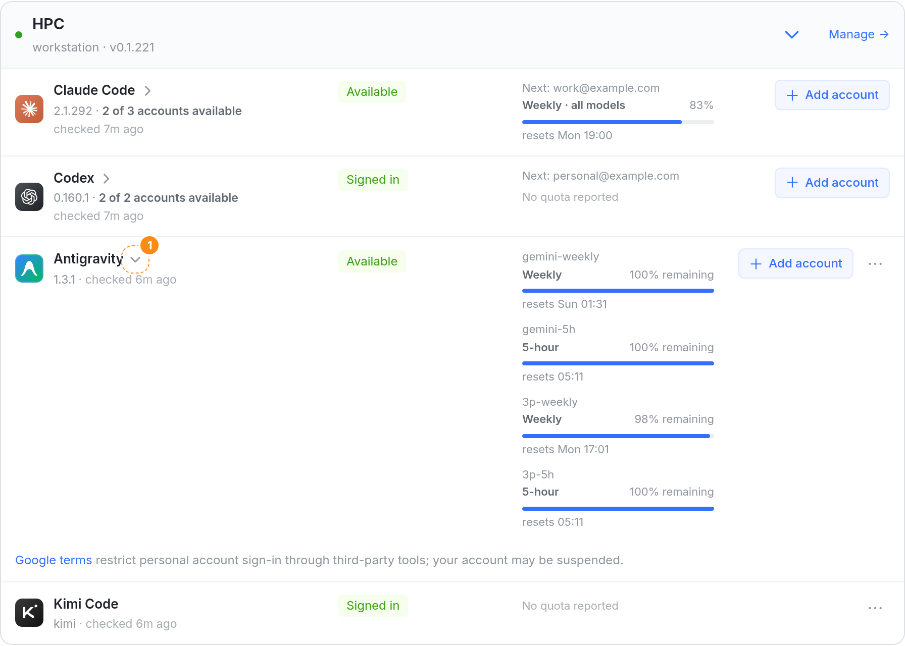
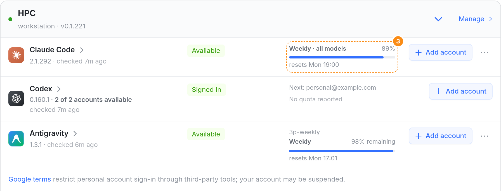
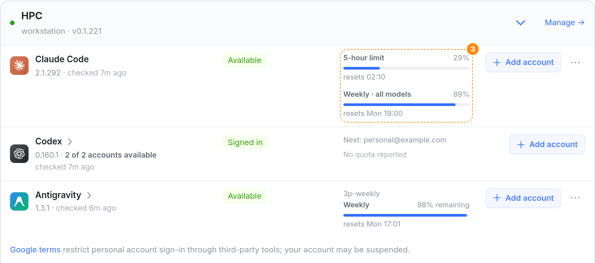
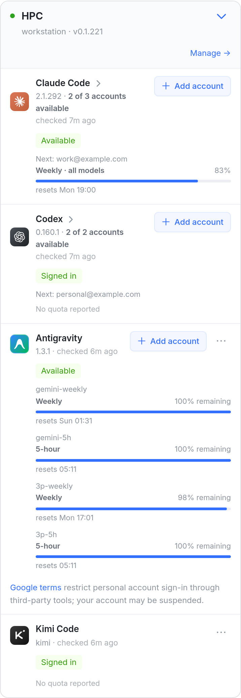
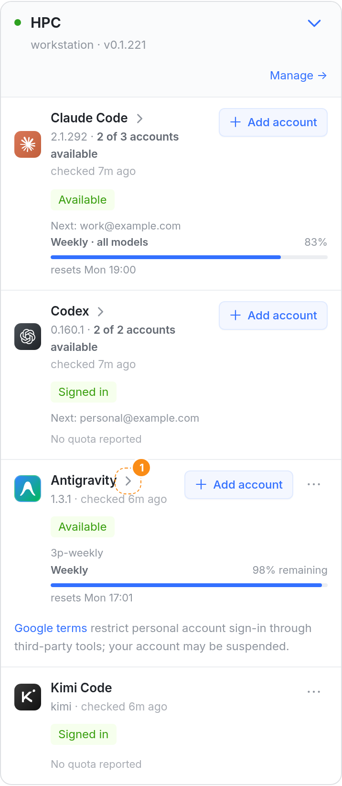

账号组收起以后（01），卡片上只剩 Antigravity 还是一长条：它只有一个账号，所以没有可收的；可它一个账号就报四个桶（gemini、3p 各一个每周、一个 5 小时），四条全列出来，一行 342px，是收起后 Claude Code 那行的四倍。这张图让单账号的行也能收起：收起时只挂最紧的那一条——和组头、运行器页、iOS 是同一条规则——点名字展开看全部。截图来自真实 web 控制台（vite dev，示例数据，照 wikova 的截图造）；箭头和收起后的额度是用页面自己的样式注入的。

Antigravity 四个桶全列（gemini-weekly、gemini-5h、3p-weekly、3p-5h），这一行 342px，整张卡 640px 里它占了一半多。Claude Code、Codex 是多账号组，已经收成一行。

1名字后多一个箭头，和账号组的是同一个：点图标、名字、版本行那一块展开 / 收起。2额度只挂最紧的一条：四个桶里剩得最少的 3p-weekly（98%）——运行器页、iOS 的 Antigravity 行挂的也是它。这一行 342 → 126px，整张卡 640 → 424px，四个引擎差不多高。

1展开时箭头转成 ⌄，四个桶照今天的样子全列，各自写几点恢复。

3Claude Code 的 5 小时、每周两条也收成一条，挂更紧的每周 89%，名字后有箭头。规则一句话：收起的行都只挂一条，每个引擎差不多高，和运行器页、iOS 一致。

3Claude、Codex 单账号的两条照旧全列，没有箭头；只有 Antigravity 四个桶、Claude Max 的 Opus / Sonnet 每周额度那样超过两条的才收。改动最少，但同一张卡上有的行一条、有的两条。


1手机上同一条规则：收起后 Antigravity 和其他引擎一样分三行，名字、状态、一条额度。
| 项 | 做法 | 依据 |
|---|---|---|
| 哪些行能收起 | 多账号的组（已有）；单账号、额度不止一条的行（A）或超过两条的行（B）。只有一条或没有额度的行没有箭头：没读到额度的 Codex、Kimi、跑在 Gemini key 上的 Antigravity。 | 有东西可藏的行才给箭头 |
| 收起时写什么 | 状态不变；额度只挂最紧的一条：有用完的先挂用完的，否则挂最接近上限的；Antigravity 挂剩得最少的桶。 | 组头、运行器页、iOS 都是这一条（bindingPlanUsageRow） |
| 展开 | 和今天一样列全部额度。 | — |
| 默认 · 记住 · 自动展开 | 和账号组一套：默认收起；按「机器 + 引擎」记住；从链接（?runner=…&engine=…）进来、点「Add account」时展开。沿用已上线的 orbit:providers-open-accounts，已经展开过的保持展开。 | 01 图已定（2026-10-07） |
| 展开一组账号时 | 每个账号行照旧列自己的全部额度。 | 点开一组就是要看全部 |
EngineRow 能收起的条件从「是账号组」放宽到「是账号组，或额度不止一条（A）/ 超过两条（B）」；单账号的行用同一个按钮和箭头；收起时 QuotaCell 只给最紧的那条（bindingPlanUsageRow 现成）。约 20 行。.re-grp-toggle、.re-grp-chev 直接用。RunnerEngines.accountFold.test.tsx 加 Antigravity 单账号的收起 / 展开，A 再加 Claude 单账号两条。其它测试经 openRunnerCards 本来就是展开的；static-markup 的几处视情况补一行打开。